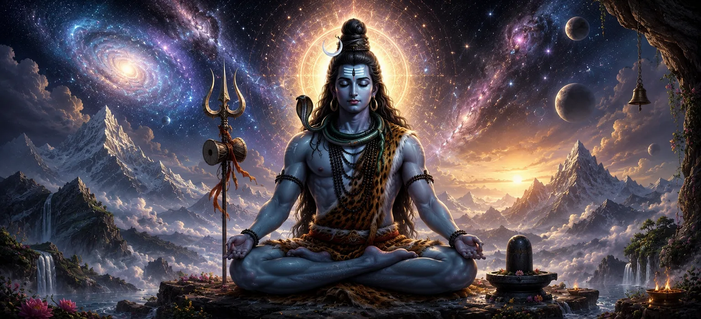

The first chapter of Srishti Khanda revealed that before the creation of the universe there existed only the Supreme Reality. This chapter continues that divine revelation by describing the eternal nature of Lord Shiva, who is beyond birth, beyond death, beyond time, and beyond every limitation of the material world. The Shiva Purana teaches that Shiva is not created by anyone, nor does He depend upon anything for His existence. He is the self-existent Supreme Being whose infinite presence fills the entire universe while remaining beyond it. Unlike ordinary forms perceived through the senses, the eternal form of Lord Shiva cannot be fully understood by the human mind alone. Great sages, celestial beings, and even the gods meditate upon His limitless glory, yet His true nature remains beyond complete description. The scriptures therefore proclaim Him as the beginningless, endless, and eternal Supreme Truth whose divine existence never changes, even though the universe continuously appears and disappears through endless cosmic cycles.
The Shiva Purana further explains that every aspect of creation ultimately rests upon the eternal consciousness of Mahadeva. Countless universes arise through His divine will, remain sustained by His infinite power, and finally dissolve back into Him at the end of every cosmic cycle. Time cannot influence Him because He is the Lord of Time itself, and space cannot contain Him because He exists beyond all dimensions while simultaneously residing within every living being. For spiritual seekers, realizing the eternal form of Lord Shiva is the beginning of true wisdom. When one understands that everything visible is temporary while Shiva alone is eternal, attachment gradually disappears and devotion becomes firm. Meditation upon His infinite nature purifies the heart, removes ignorance, strengthens faith, and guides the soul toward liberation. This sacred chapter therefore invites every devotee to contemplate the everlasting reality of Mahadeva and recognize Him as the source, sustainer, and ultimate destination of all existence.
Lord Shiva existed before time itself and remains unchanged throughout every age and cosmic cycle.
Although He fills every corner of creation, no place or dimension can ever contain His infinite presence.
Everything in the universe changes with time, yet the Supreme Shiva remains eternally perfect and complete.
The Shiva Purana explains that the Supreme Lord can be understood in two complementary ways. As Nirguna Shiva, He is beyond name, form, qualities, and imagination—the infinite Absolute Reality. As Saguna Shiva, He compassionately reveals Himself through divine forms, sacred symbols, and holy manifestations so that devotees may worship, meditate, and establish a loving relationship with Him. Both are not different realities but two ways of understanding the same Supreme Lord.
Even the greatest gods bow before Lord Shiva because He is the source from whom their own powers arise. Brahma creates through His grace, Vishnu preserves by His will, and every divine power functions according to His eternal law. Whenever confusion, suffering, or cosmic imbalance appears, the gods themselves seek refuge at the feet of Mahadeva. This sacred truth reminds every devotee that worship of Shiva is worship of the Supreme Reality behind all divine manifestations.
The eternal form of Lord Shiva is often described in the scriptures as an infinite divine light that has neither beginning nor end. This sacred light is not ordinary brilliance but the eternal radiance of Supreme Consciousness itself. It cannot be diminished by darkness, nor can it be measured by the intellect. Every sun, moon, star, and flame shines only because they reflect a tiny fraction of that limitless divine brilliance. The sages teach that those who meditate upon this eternal light gradually transcend worldly ignorance. As external darkness disappears before the rising sun, the darkness of illusion vanishes before the knowledge of Shiva. Thus, Mahadeva is praised as the everlasting Light that illuminates both the universe and the hearts of all beings.
Lord Shiva lives within every living being as the eternal witness of all thoughts, actions, and experiences.
His divine grace flows equally toward all beings without discrimination, just as sunlight shines upon everyone.
Those who sincerely seek Him discover that He quietly guides every sincere heart toward truth and liberation.
"Lord Shiva is neither born nor destroyed. He is the eternal light that existed before creation, shines throughout creation, and remains after creation has dissolved."
Having understood the eternal and infinite nature of Lord Shiva, continue to the next chapter to discover how the Supreme Lord's Divine Shakti manifests and becomes the source of all creation.